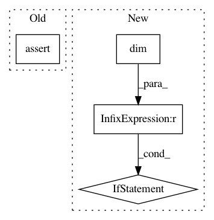

b8860d3f96b25fcf15b3db17208e34fa28cbb0ff,inferno/extensions/layers/building_blocks.py,ResBlockBase,forward,#ResBlockBase#Any#,50
Before Change
return nn.ReLU()
def forward(self, input):
assert input.size(1) == self.in_channels
if self.in_channels != self.out_channels or self.force_skip_op:
skip_res = self.activated_skip_op(input)
else:
After Change
raise RuntimeError("wrong number of channels: expected %d, got %d"%
(self.in_channels, input.size(1)))
if input.dim() != self.dim + 2 :
raise RuntimeError("wrong number of dim: expected %d, got %d"%
(self.dim+2, input.dim()))
if self.in_channels != self.out_channels or self.force_skip_op:
skip_res = self.activated_skip_op(input)
else:
skip_res = input
In pattern: SUPERPATTERN
Frequency: 3
Non-data size: 4
Instances
Project Name: inferno-pytorch/inferno
Commit Name: b8860d3f96b25fcf15b3db17208e34fa28cbb0ff
Time: 2018-08-07
Author: thorsten.beier@iwr.uni-heidelberg.de
File Name: inferno/extensions/layers/building_blocks.py
Class Name: ResBlockBase
Method Name: forward
Project Name: cornellius-gp/gpytorch
Commit Name: f7b10102a3a0b08272634347ff3a65efd3df18ce
Time: 2019-04-04
Author: gpleiss@gmail.com
File Name: test/functions/test_inv_matmul.py
Class Name: TestInvMatmulNonBatch
Method Name: test_inv_matmul_vec
Project Name: stanford-mast/nn_dataflow
Commit Name: a8eeb46f0f10ae97c82c09003b2319529b7ce4d3
Time: 2017-08-21
Author: mgao12@stanford.edu
File Name: nn_dataflow/tests/unit_test/test_partition_scheme.py
Class Name: TestPartitionScheme
Method Name: test_part_neighbor_dist